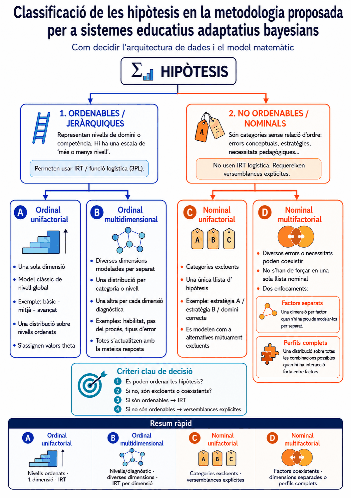

Guia tècnica per implementar avaluació adaptativa amb inferència bayesiana i entropia de Shannon
Versió 1.8
Veure també: Explicació matemàtica detallada amb exemples numèrics →
Descarregar especificació operativa per a IA — arxiu breu llest per adjuntar o enganxar a qualsevol model d'IA
Aquest document serveix com a guia per crear aplicacions, activitats o qüestionaris educatius adaptatius basats en inferència bayesiana i entropia de Shannon.
L'objectiu no és crear un test lineal ni una seqüència rígida de preguntes, sinó un sistema capaç d'adaptar l'experiència de l'alumne a partir de les respostes. Cada resposta s'interpreta com una evidència que modifica progressivament una distribució de probabilitats sobre diferents hipòtesis educatives.
Aquestes hipòtesis poden referir-se a:
El sistema ha de produir una interpretació pedagògica, no només una puntuació.
El sistema ha d'utilitzar les respostes de l'alumne com a evidències per actualitzar hipòtesis sobre la seva situació d'aprenentatge.
Cada resposta ha de modificar l'estimació del sistema de manera gradual. Una sola resposta no ha de determinar del tot el resultat.
Una resposta correcta ha d'augmentar la plausibilitat de certes hipòtesis i una resposta incorrecta ha d'augmentar la plausibilitat d'altres, sempre segons les versemblances associades a cada pregunta.
El sistema ha d'evitar conclusions contundents quan la incertesa segueixi sent alta.
L'estat de l'alumne s'ha de representar com a distribució de probabilitats sobre diverses hipòtesis.
Per exemple, en un sistema senzill es podrien fer servir tres hipòtesis:
El sistema, però, no ha d'assumir obligatòriament tres nivells. S'ha de poder adaptar a més o menys nivells, segons el context educatiu.
També es poden fer servir hipòtesis no estrictament jeràrquiques, per exemple:
A l'inici, si no hi ha informació prèvia de l'alumne, el sistema pot partir de probabilitats equilibrades. Si hi ha informació prèvia fiable, podeu utilitzar una distribució inicial justificada.
L'estat de l'alumne no ha de ser una sola distribució. Quan interessa saber no tan sols quant domina, sinó quines habilitats o passos concrets falla, el sistema pot mantenir diverses distribucions de probabilitat en paral·lel: una per categoria o nivell i una altra per cada dimensió diagnòstica (una habilitat, un pas del procés, un tipus d'error).
Totes s'actualitzen amb la mateixa resposta de l'alumne: el resultat global modifica la creença sobre el nivell, i cada part de la resposta modifica la creença sobre la dimensió corresponent. Així, l'estimació de nivell indica què cal practicar, i el diagnòstic per dimensió indica què convé explicar o reforçar. Cada dimensió pot tenir la seva pròpia probabilitat d'encert per atzar, per la qual cosa els seus percentatges no són directament comparables entre si; la referència comuna és el valor de nivell subjacent.

Cada tipus té un exemple publicat que l'il·lustra:
El sistema ha d'actualitzar la distribució de probabilitats mitjançant inferència bayesiana.
Per a cada hipòtesi, cal estimar la probabilitat d'observar la resposta de l'alumne si aquesta hipòtesi fos certa.
Aquesta probabilitat és la versemblança.
Si l'alumne encerta una pregunta, el sistema ha de fer servir la probabilitat d'encert sota cada hipòtesi. Si l'alumne falla, ha de fer servir la probabilitat de fallada sota cada hipòtesi.
El resultat de cada actualització ha de ser una nova distribució de probabilitats sobre les hipòtesis considerades.
El procés s'ha de repetir després de cada resposta.
Tot i que el document ha de continuar sent comprensible per a docents, convé incloure les fórmules essencials perquè la IA implementi el sistema de manera coherent.
Si hi ha \(n\) hipòtesis i no hi ha informació prèvia fiable, es pot fer servir una distribució uniforme:
On \(H_i\) representa una possible hipòtesi sobre l'estat de l'alumne.
Després de cada resposta, la probabilitat de cada hipòtesi s'actualitza mitjançant:
El denominador es calcula sumant sobre totes les hipòtesis:
On \(R\) és la resposta observada, que pot ser encert, fallada o un altre resultat autocorregible previst pel sistema.
Per a cada pregunta \(q\) i cada hipòtesi \(H_i\), el sistema ha d'estimar:
Si l'alumne falla, cal utilitzar:
Aquestes probabilitats són les versemblances que alimenten l'actualització bayesiana.
En preguntes d'opció múltiple, la probabilitat mínima d'encert per atzar depèn del nombre d'opcions de cada pregunta:
On \(c_q\) és la probabilitat d'encert per atzar de la pregunta \(q\), i \(m_q\) és el nombre d'opcions d'aquesta pregunta.
Per exemple, una pregunta de quatre opcions té:
Aquesta probabilitat ha de pertànyer a cada pregunta, no pas al test complet.
El sistema ha de poder generar les versemblances automàticament. Una opció recomanable és fer servir una funció logística ajustada per atzar:
On:
Aquesta fórmula no substitueix Bayes. Només genera les versemblances que Bayes necessita.
El paràmetre \(a\) controla el pendent de la corba logística. Un valor alt fa que la funció discrimini més entre hipòtesis properes; un valor baix produeix transicions més suaus. Els valors habituals en psicometria oscil·len entre 0,5 i 2,5. Per a sistemes educatius de propòsit general, un valor de 1.0 a 1.5 és un punt de partida raonable; 1.5 és una bona elecció per defecte.
La incertesa del sistema es mesura mitjançant:
On \(p_i\) és la probabilitat actual de cada hipòtesi.
L'entropia màxima, quan totes les hipòtesis són igual de probables, és:
Aquest valor ajuda a ajustar el llindar de parada al nombre d'hipòtesis considerades.
Per seleccionar la pregunta següent, el sistema pot estimar la reducció esperada d'incertesa:
On \(P(A)\) és la probabilitat total esperada d'encert i \(P(F)\) la probabilitat total esperada de fallada, calculades mitjançant la llei de la probabilitat total:
Les distribucions posteriors a l'encert i a la fallada es calculen aplicant Bayes abans d'obtenir la resposta real:
Quan sigui possible, la pregunta més útil serà la que produeixi una reducció més gran esperada d'entropia.
Les fórmules anteriors suposen que la resposta és binària: encert o error. Però moltes tasques es resolen per passos o components i admeten encerts parcials. En aquests casos, en lloc de classificar la resposta com a encert o fallada, es resumeix en una puntuació \(s\) entre 0 i 1, i la versemblança s'obté interpolant entre la d'encert i la de fallada:
Si \(s=1\), equival a un encert ple; si \(s=0\), a una fallada plena; si \(s=0.5\), la versemblança és plana i no modifica la distribució. Aquesta versemblança suau entra en l'actualització bayesiana igual que qualsevol altra: només canvia la manera de construir-la. La puntuació \(s\) s'ha de calcular de forma explícita i autocorregible, normalment com a suma ponderada de subcriteris els pesos dels quals sumen 1. El desenvolupament formal i un exemple numèric són a la explicació matemàtica.
Les versemblances són l'element central del sistema.
Per a cada pregunta, el sistema ha d'estimar:
El docent no ha d'haver d'emplenar manualment una taula de probabilitats. Aquesta tasca l'ha de fer el sistema.
El docent només hauria d'aportar informació pedagògica comprensible, com ara:
A partir d'aquesta informació, el programa ha de generar automàticament les versemblances. Això es pot fer amb un model generador, preferiblement una funció logística ajustada per atzar, i més endavant es poden recalibrar els valors amb dades reals si es disposa de prou respostes.
Per tant, el flux recomanat és:
El criteri docent ha d'intervenir en la definició de nivells, dificultats, objectius i conceptes però no ha d'exigir introduir probabilitats numèriques.
L'aplicació no ha de dependre d'una taula fixa global de versemblances.
Cada pregunta ha de poder tenir els seus paràmetres, especialment:
Això permet que el sistema funcioni amb preguntes de diferents tipus dins d'una mateixa prova.
Per exemple, una prova pot incloure preguntes de dues opcions, quatre opcions, cinc opcions, aparellament i resposta numèrica. Cadascuna ha de generar les seves pròpies versemblances.
Cada pregunta ha de tenir una dificultat estimada.
La dificultat es pot expressar de manera qualitativa, per exemple: fàcil, mitjana, difícil. També es pot expressar mitjançant una escala més flexible.
El sistema no ha d'assumir que sempre hi haurà tres dificultats. S'ha d'adaptar al nombre de categories que defineixi el docent.
Quan el docent defineix la dificultat de manera qualitativa, el sistema l'ha de convertir a valors numèrics per operar amb la funció logística. Una convenció útil és centrar els valors a zero i separar-los per intervals iguals:
| Categories de dificultat | Valors numèrics \(b_q\) |
|---|---|
| 2 | −0,5 · · 0,5 |
| 3 | −1 · · 0 · · 1 |
| 4 | −1,5 · · −0,5 · · 0,5 · · 1,5 |
| 5 | −2 · · −1 · · 0 · · 1 · · 2 |
Els valors numèrics \(\theta_i\) dels nivells o hipòtesis jeràrquiques segueixen la mateixa convenció de centrat en zero amb intervals iguals, però han d'abastar un rang estrictament més gran que el de \(b_q\). Aquesta condició és important: si \(\theta_{\max} = b_{\max}\), el nivell extrem i la dificultat extrema coincideixen al punt d'inflexió de la corba logística. En aquest punt la pregunta discrimina molt, però la probabilitat d'encert del nivell extrem encara pot ser moderada, per això encertar-la confirma feblement aquest nivell. Un factor de 2 funciona bé a la pràctica: \(|\theta_{\max}| = 2 \cdot |b_{\max}|\). Per exemple, amb 3 dificultats \(b \in \{-1, 0, +1\}\) i 3 nivells, fer servir \(\theta \in \{-2, 0, +2\}\) fa que les preguntes difícils resultin més informatives per als alumnes avançats. El més robust és calcular automàticament \(\theta_{\max}\): \(\theta_{\max} = 2 \cdot \max|b_q|\).
El sistema ha d'admetre diferents nombres d'hipòtesis:
El llindar d'entropia i els criteris de parada s'han d'adaptar al nombre d'hipòtesis considerades. No s'ha de fer servir el mateix llindar per a tots els dissenys sense justificació.
Si es vol aturar quan la hipòtesi més probable supera un nivell de confiança \(p_{\min}\) (per exemple, 0,80), un llindar d'entropia orientatiu associat a aquest nivell de confiança és:
Aquesta fórmula suposa que la probabilitat restant es reparteix uniformement entre les altres hipòtesis \(n-1\). Alguns valors orientatius amb \(p_{\min}=0,80\):
| Hipòtesi \(n\) | \(H_{\text{stop}}\) (bits) |
|---|---|
| 2 | 0,72 |
| 3 | 0,92 |
| 4 | 1,04 |
| 5 | 1,12 |
La fórmula anterior suposa que la probabilitat restant es reparteix uniformement entre les altres \(n-1\) hipòtesis, cosa que no sempre passa en distribucions reals. Per exemple, amb tres hipòtesis, les distribucions (0,80, 0,10, 0,10) i (0,80, 0,19, 0,01) tenen la mateixa hipòtesi màxima però diferent entropia. Per tant, el llindar \(H_{\text{stop}}\) ha d'entendre's com una aproximació pràctica, no com un equivalent exacte. Convé saber que, quan \(H_{\text{stop}}\) es deriva del mateix \(p_{\min}\), la condició de probabilitat màxima ja implica la d'entropia (si la hipòtesi més probable assoleix \(p_{\min}\), l'entropia queda per sota del llindar): comprovar-les totes dues és inofensiu, però no afegeix exigència. Un control addicional que sí que n'afegeix és exigir una separació mínima entre la hipòtesi guanyadora i la segona (vegeu l'explicació matemàtica, §7.4).
Les hipòtesis d'una mateixa distribució han de ser excloents mútuament i cobrir les alternatives rellevants per a aquesta decisió. Si diversos errors, llacunes o necessitats poden coexistir, convé fer servir distribucions separades per concepte, dimensió o categoria, en lloc de forçar-les dins d'una única llista d'hipòtesis.
Quan les hipòtesis no són jeràrquiques —categories alternatives sense relació d'ordre entre elles, com ara diferents estratègies, causes alternatives d'un mateix error o àrees temàtiques sense jerarquia—, la funció logística IRT pot no ser el model més adequat, perquè assumeix que hi ha una escala única de més o menys nivell. En aquests casos convé definir les versemblances d'una altra manera: per exemple, assignant directament una probabilitat d'encert alta per a les preguntes que diagnostiquen la hipòtesi correcta i una probabilitat més baixa per a les que la confonen amb altres hipòtesis. L'actualització bayesiana continua sent idèntica; només canvia la manera de generar les versemblances.
Si diversos errors o necessitats poden coexistir, però, no s'han de forçar dins d'una sola llista d'hipòtesis nominals. L'enfocament adequat és usar una dimensió per factor o, si cal captar-ne les interaccions, una distribució sobre perfils complets (les combinacions possibles d'aquests factors). En aquest marc, l'evidència ideal no és només «encert» o «error», sinó també quina opció ha triat l'alumne: un distractor pot ser precisament el senyal d'un error concret.
Per assignar aquestes probabilitats sense dades empíriques convé un criteri explícit. Per cada pregunta i cada hipòtesi, factor o perfil, estima: «si l'alumne tingués aquest error o aquesta combinació d'errors, amb quina freqüència encertaria aquesta pregunta i quin distractor triaria?». El valor serà baix quan la pregunta ataca just el concepte que l'error distorsiona, i alt quan l'error no interfereix. Acota cada valor entre un terra d'atzar (no menys d'\(1/m\), amb \(m\) opcions, quan el fall prové de respondre a l'atzar) i un sostre inferior a 1 per al domini (al voltant de 0,90–0,95, deixant marge a descuits). Hi ha una única excepció justificada al terra: si la pregunta és d'opció múltiple i un dels distractors és precisament la resposta que produeix l'error, l'alumne és atret cap a aquesta opció i la seva probabilitat d'encert cau per sota de l'atzar. No cal afinar el decimal exacte: n'hi ha prou que, en les preguntes que discriminen, els perfils correctes se separin clarament dels que l'error fa fallar. La formulació matemàtica (§10) detalla aquestes variants i la seva validació.
Si el sistema ha de funcionar automàticament, heu d'utilitzar preguntes autocorregibles.
Són adequats, entre d'altres, aquests formats:
No s'han d'incloure preguntes obertes llargues si el programa no es pot corregir automàticament de manera fiable.
Les preguntes obertes poden ser útils en una activitat educativa general, però no han de formar part del motor adaptatiu automàtic si no hi ha un mecanisme fiable de correcció o intervenció docent.
En preguntes d'opció múltiple, la probabilitat mínima d'encert per atzar ha de dependre del nombre d'opcions de cada pregunta. Aquesta probabilitat pertany a cada ítem, no pas al test complet.
Exemples:
Si dins d'una mateixa prova hi ha preguntes amb diferents opcions, cada pregunta ha d'usar la seva pròpia probabilitat mínima d'encert per atzar.
En la selecció múltiple amb diverses respostes correctes, la probabilitat d'encert per atzar pot ser diferent. El sistema ha de tractar aquest cas de manera específica, especialment si s'exigeix coincidència exacta amb la combinació correcta.
En respostes numèriques amb tolerància o respostes breus exactes, la probabilitat d'encert per atzar es pot considerar nul·la o molt baixa, segons el disseny.
Quan un ítem es corregeix per diversos components amb diferents opcions —per exemple, una tasca amb diversos passos—, la seva probabilitat d'encert per atzar no és la d'una sola pregunta. En aquest cas es calcula com la mitjana ponderada dels atzars de cada component, usant els mateixos pesos amb què es puntua la resposta. Aquest valor afegit és el que alimenta la funció logística de l'element complet.
Quan escaigui, les versemblances poden generar-se mitjançant una funció logística ajustada per atzar.
La idea general és que la probabilitat d'encert ha d'augmentar quan el nivell hipotètic de l'alumne supera la dificultat de la pregunta, i ha de disminuir quan la dificultat supera el nivell hipotètic de l'alumne.
Si es fa servir aquest model, cal respectar una condició important: la probabilitat d'encert no ha de ser inferior a la probabilitat d'encert per atzar pròpia de la pregunta.
Per tant, una pregunta de quatre opcions no hauria d'assignar una probabilitat d'encert inferior al 25%, perquè un alumne que respon a l'atzar té aquesta probabilitat d'encertar-la.
La funció logística no substitueix Bayes. Només serveix per generar les versemblances que Bayes necessita.
El sistema ha de permetre que aquesta generació sigui ajustable. Per exemple, hi pot haver un paràmetre de sensibilitat o discriminació que determini quant separa una pregunta entre unes hipòtesis i altres.
A partir de l'estimació actual, el programa ha de seleccionar dinàmicament la pregunta, explicació o activitat següent.
La selecció ha de cercar utilitat pedagògica i pot servir per a:
El sistema no s'ha de limitar a pujar la dificultat després d'un encert i baixar-la després d'una errada.
Heu de tenir en compte: historial de respostes, conceptes ja avaluats, errors detectats, varietat de continguts, dificultat relativa de les preguntes, tipus de pregunta, nombre d'opcions de cada pregunta, probabilitat d'encert per atzar, i grau de seguretat de l'estimació actual.
Quan diverses preguntes tenen el mateix guany d'informació esperada —allò que passa sovint quan comparteixen els mateixos paràmetres de dificultat i nombre d'opcions—, la selecció entre elles no ha de ser determinista. Es recomana una selecció aleatòria ponderada: calcular el guany de totes les candidates, reunir les que estan dins un marge mínim del màxim, i triar entre elles amb una probabilitat proporcional a l'invers de les vegades que la seva categoria o concepte ja ha aparegut. Això combina màxima utilitat informativa amb diversitat temàtica, sense imposar restriccions rígides. Una selecció determinista entre empats produeix tests sistemàticament repetitius entre diferents sessions.
En recursos de pràctica adaptativa, reforç o entrenament per tipus, la selecció no ha de perseguir sempre el mateix objectiu. Al principi convé diagnosticar; després convé intervenir sobre el menys dominat.
Es recomana una estratègia en dues fases:
Aquesta separació evita un ús excessiu de l'entropia de Shannon. L'entropia respon a la pregunta “on tinc més incertesa?” però no sempre respon a “què necessita practicar més l'alumne?”. En avaluació diagnòstica pura, maximitzar la reducció d'incertesa pot ser el criteri principal. En pràctica adaptativa i reforç, s'ha de combinar amb una funció d'utilitat pedagògica que prioritzi els continguts menys dominats.
En termes operatius, la fase de reforç pot fer servir una puntuació d'utilitat com:
utilitat = α · IG_normalitzada + (1 − α) · ajust_de_dificultat
on ajust_de_dificultat disminueix quan la dificultat de la pregunta s'allunya molt del nivell estimat de l'alumne. Un valor inicial raonable és α = 0.6 o 0.7, per conservar valor diagnòstic sense convertir el reforç en una successió d'exercicis massa difícils.
Els criteris de parada (secció 17) suposen que l'objectiu és diagnosticar i tancar. En recursos de pràctica o reforç obert, en canvi, pot no haver-hi un final fix: la sessió continua mentre l'alumne practica, i l'estat estimat s'entén com una estimació viva, no com un diagnòstic tancat. Així, l'entropia i la confiança serveixen per informar del grau de seguretat, no per acabar la sessió, i la selecció en dues fases es manté durant tota la pràctica.
Amb pocs intents, una sola resposta pot desplaçar molt l'estimació. Per no comunicar un domini infundat, cal exigir una mostra mínima per categoria o dimensió abans de mostrar nivells alts de domini, i presentar l'estimació com a provisional mentre l'evidència sigui escassa. És una decisió de presentació: no canvia el càlcul bayesià, només com es tradueix a la interfície.
En sessions de pràctica llargues hi ha un matís més: l'alumne aprèn mentre practica, i l'actualització bayesiana pura dona el mateix pes a les respostes antigues que a les recents, de manera que l'estimació pot quedar-se ancorada en un estat que l'alumne ja ha superat. Perquè l'estimació segueixi el seu estat actual convé aplicar un oblit gradual de l'evidència antiga (oblit exponencial): les respostes recents pesen més que les antigues i el sistema recorda, a la pràctica, les últimes 10–20 respostes. En recursos diagnòstics de sessió curta no s'ha d'aplicar aquest oblit. El mecanisme, els seus valors recomanats i l'extensió que modela explícitament l'aprenentatge són a l'explicació matemàtica (§3.5).
Quan sigui possible, el sistema ha de seleccionar la pregunta que més redueixi la incertesa esperada.
Per això ha d'estimar, abans de presentar la pregunta:
La millor pregunta no ha de ser la que coincideix amb el nivell més probable. Pot ser una pregunta que ajudi a distingir entre dues hipòtesis encara plausibles.
Per exemple, si el sistema dubta entre nivell mitjà i avançat, una pregunta difícil pot ser més útil que una pregunta mitjana. Si dubta entre bàsic i mitjà, una pregunta mitjana o fàcil pot ser més informativa, segons les versemblances.
Maximitzar la reducció d'incertesa té un efecte secundari que convé conèixer: les preguntes més informatives tendeixen a ser aquelles amb una probabilitat d'encert al voltant del 50 %, de manera que l'alumne fallarà aproximadament la meitat del que respongui durant el diagnòstic. És l'òptim des del punt de vista informatiu, però pot tenir cost motivacional amb alumnat jove o amb dificultats. Una decisió pedagògica raonable —i opcional— és obrir amb una pregunta assequible o intercalar-ne alguna d'èxit probable, acceptant una petita pèrdua d'eficiència a canvi de sostenir la confiança de l'alumne.
Quan la selecció de preguntes es fa per màxim guany d'informació esperada, la recuperació queda en gran part integrada al mateix mecanisme bayesià: si l'alumne inicialment falla però després respon correctament preguntes més difícils, el posterior es desplaça automàticament i el sistema selecciona preguntes més exigents. No sol ser necessària una lògica de recuperació explícita, però la recuperació completa no està garantida si les preguntes estan mal calibrades, si n'hi ha poques de disponibles en algun nivell, o si l'alumne respon a l'atzar.
Els mecanismes de recuperació explícits només són necessaris quan la selecció de preguntes es basa en regles simples de dificultat (pujar rere encert, baixar rere fallada), perquè en aquest cas el sistema pot quedar bloquejat en un nivell incorrecte. Si utilitzeu selecció per guany d'informació, el risc de bloqueig es redueix molt, perquè el sistema reavalua el posterior després de cada resposta. Tot i així, hi pot haver bloquejos pràctics si el banc de preguntes és limitat, si les versemblances estan mal calibrades o si s'atura la prova massa aviat.
El que sí que s'ha de garantir en qualsevol disseny:
La seguretat raonable s'ha d'estimar mitjançant l'entropia de Shannon aplicada a la distribució de probabilitats de les hipòtesis.
Quan les probabilitats estan molt repartides, l'entropia és alta i el sistema té molta incertesa. Quan una hipòtesi concentra la major part de la probabilitat, l'entropia és baixa i el sistema té més seguretat.
L'entropia ha de servir per a:
El llindar de parada s'ha d'ajustar al nombre d'hipòtesis considerades i al grau de precisió desitjat.
El procés s'ha d'acabar quan hi hagi una seguretat raonable sobre l'estat d'aprenentatge de l'alumne o quan arribi a un límit pràctic.
Els criteris possibles són:
Si l'entropia final continua sent alta, el sistema ho ha d'indicar clarament. En aquest cas, el resultat s'ha de presentar com una estimació provisional, no pas com una conclusió ferma.
El resultat final s'ha de presentar com a interpretació pedagògica.
Ha d'incloure, quan escaigui:
No us heu de limitar a mostrar una puntuació o una etiqueta.
Quan dues hipòtesis acaben amb probabilitats properes, convé mostrar la distribució posterior completa (per exemple, mitjançant un diagrama de barres) en lloc d'una sola etiqueta guanyadora.
La finalitat del sistema és ajudar a prendre decisions educatives.
El concepte de recurs educatiu adaptatiu s'ha d'entendre de manera àmplia. Un test adaptatiu només és un cas particular. La mateixa lògica es pot aplicar a explicacions, pràctiques, simuladors, itineraris, sistemes de pistes, activitats de reforç, ampliació o recomanació de recursos. El que és important és que el recurs prengui decisions pedagògiques a partir de les evidències que obté durant la interacció amb l'alumne.
La implementació concreta s'ha d'adaptar al context educatiu que indiqui el docent.
Abans de dissenyar el sistema, convé recollir informació sobre:
El sistema ha d'adaptar les decisions a aquest context.
La plantilla operativa per recollir la informació inicial del docent ja no forma part d'aquest document.
Per a aquest ús pràctic, fes servir l'especificació operativa per a IA, enllaçada també des de la pàgina principal.
En generar una aplicació o activitat basada en aquest protocol, la IA ha de seguir aquestes regles:
La instrucció mestra portable es manté al fitxer breu especificacion_operativa_ia_ca.md, pensat per adjuntar-se directament a un model d'IA.
Aquest protocol no substitueix el criteri docent.
El sistema pot ajudar a orientar decisions, però els resultats s'han d'interpretar amb prudència, especialment quan:
El valor principal de l'enfocament és fer explícita la incertesa i adaptar l'activitat a les evidències disponibles.
Quan el resultat s'hagi d'usar per a decisions, convé acompanyar-lo de comprovacions de fiabilitat que no requereixen dades empíriques: un índex d'ajust del patró de cada alumne (detecta respostes incoherents amb la dificultat, que farien el diagnòstic poc fiable encara que la confiança sigui alta) i una validació del disseny per simulació (estima, abans d'aplicar el test, en quina mesura el banc separa els nivells). Totes dues es descriuen en els fonaments matemàtics (§11.7–§11.8); són una capa opcional, no un pas obligatori, i mesuren fiabilitat sota el model, no validesa empírica.
En recursos d'aprenentatge prolongat, com ara tutorials, pràctica adaptativa, reforç o ampliació, l'estat de l'alumne pot canviar durant la mateixa sessió. En aquests casos, el posterior no s'ha d'interpretar només com el diagnòstic d'un estat fix, sinó com una estimació dinàmica que pot combinar evidències recents, ajuts utilitzats, progrés observat i canvis en el rendiment. El mecanisme d'oblit exponencial descrit als fonaments matemàtics (§3.5) concreta aquesta idea fent que les respostes recents pesin més que les antigues.
El desenvolupament matemàtic del model (inferència bayesiana, entropia de Shannon, teoria de resposta a l'ítem) i la seva bibliografia completa són a l'explicació matemàtica detallada.
Com a fonament pedagògic específic d'aquest protocol:
Com citar aquest document (APA 7): de Haro, J. J. (2026). Protocol per a sistemes educatius adaptatius bayesians (versió 1.8). https://jjdeharo.github.io/recursos-adaptativos/documentacion_ca.html
El desenvolupament formal dels mecanismes descrits en aquest protocol —inferència bayesiana, model IRT, entropia de Shannon i selecció adaptativa— es troba al document complementari Fonaments matemàtics, que inclou fórmules, demostracions i un exemple numèric complet.